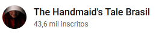

The Handmaid's Tale | Teaser legendado temporada final



35.746 visualizações 24 de ago. de 2022
Alguns pecados não podem ser lavados. 🩸
A quinta temporada de The Handmaid's Tale estreia em 14 de setembro no Hulu e dia 18 no UOL Play.
A quinta temporada de The Handmaid's Tale estreia em 14 de setembro no Hulu e dia 18 no UOL Play.
0 comentários
Principais comentários
Mais recente primeiro